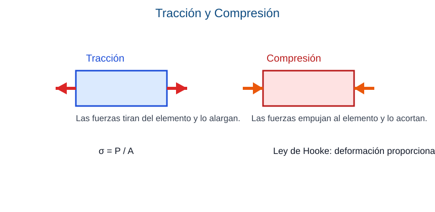

Capacidad: Analiza elementos sometidos a tracción y compresión. Relaciona carga, área, tensión, deformación y módulo de elasticidad.
Propósito: Relacionar carga, área, tensión y deformación en piezas sometidas a esfuerzos axiales.
Una pieza trabaja a tracción cuando se estira y a compresión cuando se acorta. La tensión normal puede calcularse con σ = P / A.
Muchos elementos de obra trabajan con esfuerzos axiales. Un tensor de acero se estira cuando recibe tracción. En cambio, una columna recibe cargas verticales que tienden a comprimirla.
Si la misma carga actúa sobre un área pequeña, la tensión será mayor. Si el área aumenta, la tensión disminuye. Dentro del límite elástico, el material recupera su forma inicial cuando desaparece la carga.
| Tracción | Compresión |
|---|---|
| Alarga el elemento | Acorta el elemento |
| Típica en cables y tensores | Típica en columnas y pilares |

Explicación del gráfico: a la izquierda las fuerzas tiran del elemento y lo alargan. A la derecha las fuerzas empujan hacia el centro y lo acortan. Debajo se recuerda la relación σ = P / A.
Ejemplo aplicado: los alambres de tensado de una cubierta trabajan a tracción. Los pilares de hormigón que sostienen una losa trabajan principalmente a compresión.